Mechanical Design - Machine Design
In this module, we have to work in group and make a machine that implement a specific function. We have to design all the machine,the axis the effector, and then automate it. After this we make a page of all individuals documentation of the project
We decide to split up the student in 2 group and make 2 different machine made out of 2 axis each one ( because we have only 4 gestalt board a 4 motor)
Before that me and some other students in the opendot make some test on the gestalt axis whit cardboard to understand the future system we have to design
we build up 2 gestalt axis and start to experiment in motion and control mechanic
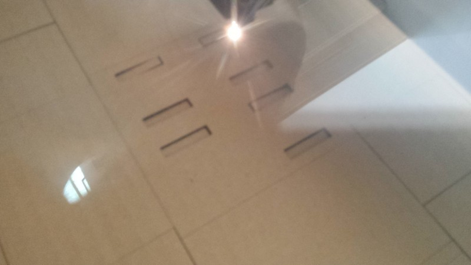
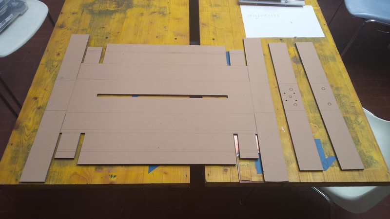
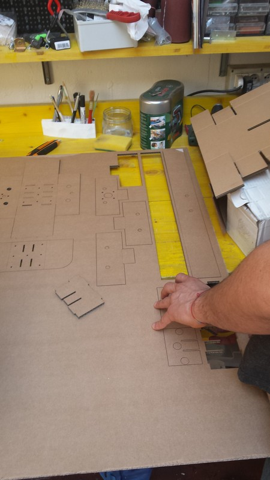
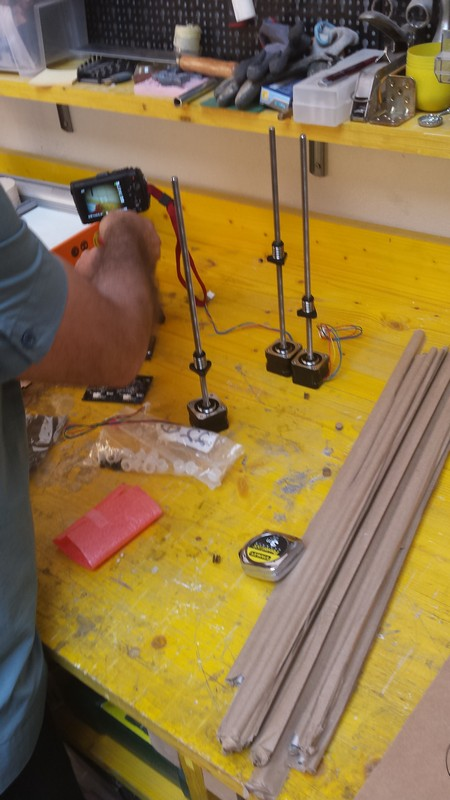
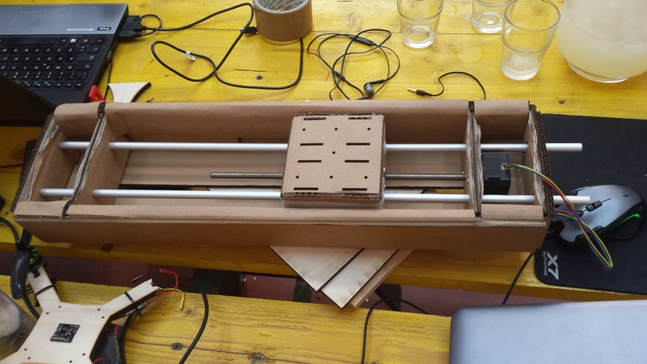
After this experimentation and the test of all the gestalt board and motor to work well we start the two different project of MTM module
Machine that make Zen Garden
I'm in the Zen Garden group so we have to make a xy motion system that will draw in the sand like a real zen garden.
For this purpose we need to add a 3rd actuator that will pull up and down the item used to draw in the sand.
we decide to use a servo motor united to a satsha kit for the control part who will sink whit the pc sender to synch the action.
this is my job for this project.
Searching in the lab i found a micro servo motor whit about a 1kg of torque and a 180° rotation.
I decide to build the linear actuator round this.
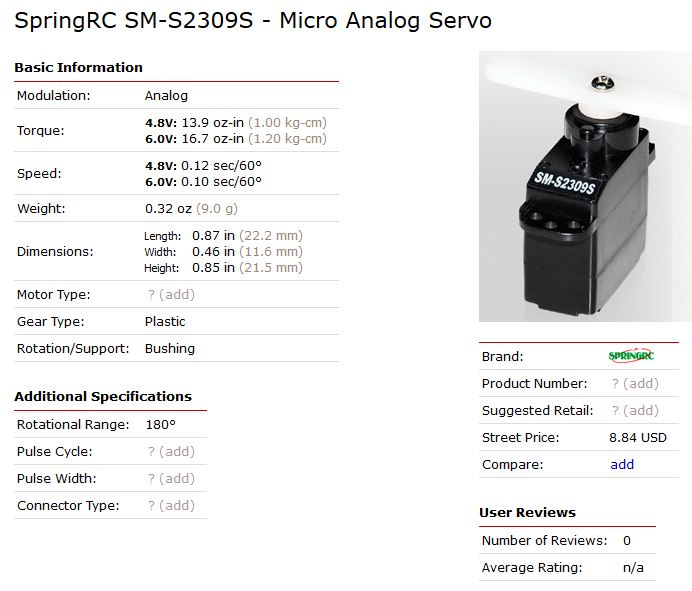
After a technical talk to the master of the project Saverio Silli who have to build the structure, i have all the data needed to build the actuator.
it will have a moving space about 5 cm and a usable space of about 8cm above the sand box
I decide to build all the part using 3d printing so I start to model it.
the idea is to make a rack and pinion in a linear guide all printed in PLA that have low friction during movement and can be easily reworked whit sand paper
I use the inkscape add on to model the gear and the rack building some gear profile.
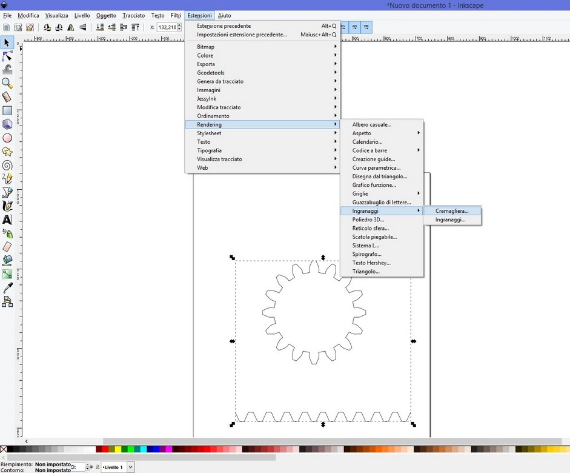
I import this drawing in rhino in dxf format and start to model in 3d the shape of final "slider".
I build a "T" version linear guide whit gear.
the diameter of the gear is made using the proportion of the 180° of the servo to make a 5 cm long movement on full extension of the rail.
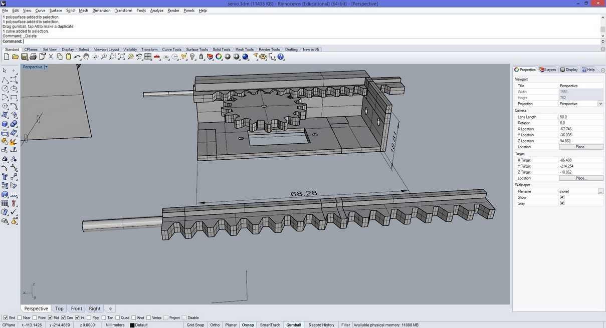
the second modify is to make more strong the last piece of the rail ( the cylinder) so the item will fit more stable and to make the geared side of the rail not ending so the rail will be pulled off and replaced more easily
Electronics
For the electronic side i solder a satsha's kit and make a simple sketch whit Daniele Ingrassia.
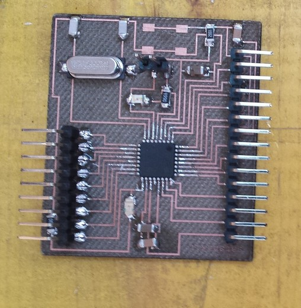
Here you can find the main page of Satsha's kit
#include < Servo.h>
Servo servo;
int value;
void setup() {
pinMode(13,OUTPUT);
servo.attach(12);
Serial.begin(115200);
}
void loop() {
if(Serial.available()){
value = Serial.read();
Serial.println(value);
if(value == 48){
digitalWrite(13,LOW);
servo.write(0);
}
else
if(value == 49){
digitalWrite(13,HIGH);
servo.write(130);
}
}
delay(10);
}
This sketch will monitor the serial for a communication to occur and after the data was revived if it was 0 the servo will go to 0° position, if the data was 1 it will go to the 180° position.
this serial comunication is synked on the software side that Daniele made.
This is the final result of my job
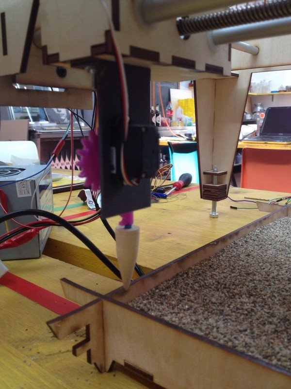
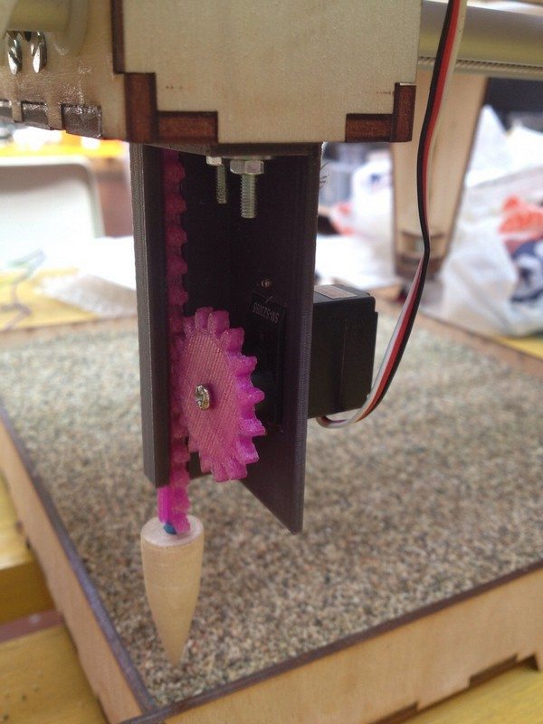
Download the folder of the dxf and the stl of the machine servo linear actuator